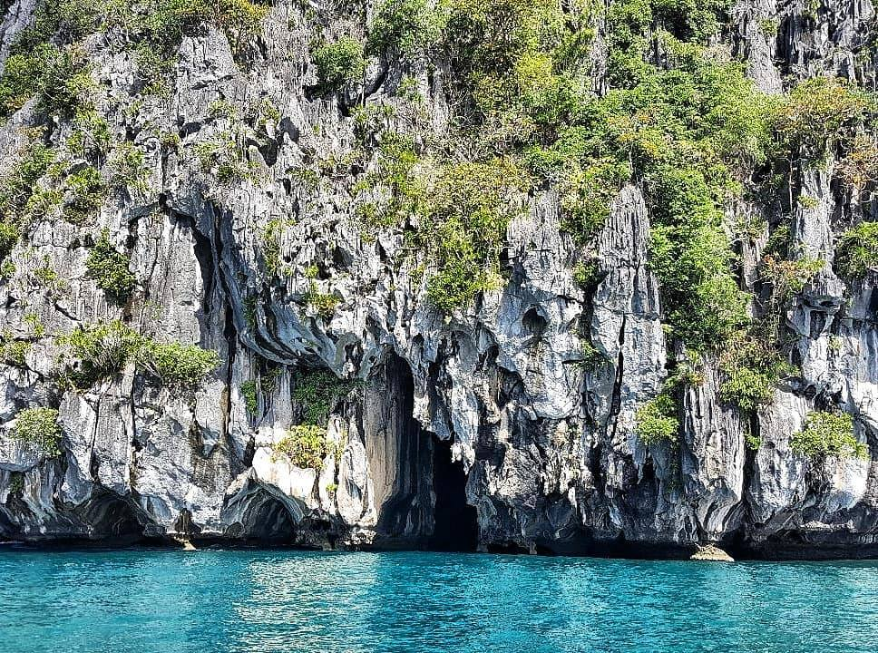
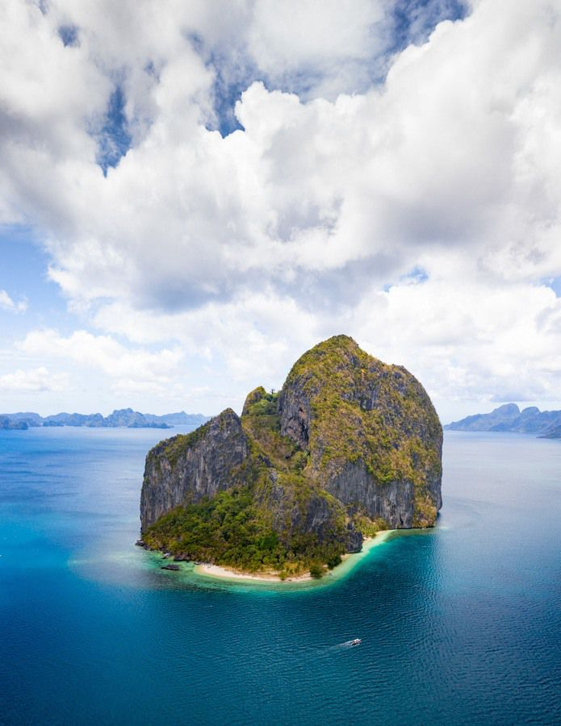

EL Nido
islands
resorts
blogs
others
EL Nido
Blog
El Nido.The Nest
Island Tours
Tour A · Tour B · Tour C · Tour D
745
Small Lagoon
The Small Lagoon is just one of the many unbelievably beautiful lagoons in El Nido, Palawan. Usually the first stop of El Nido Island Hopping Tour A, this lagoon is surely a good place to kick-start this tour. Small Lagoon is not too intimidating, although it can still overwhelm, and is a welcoming sight for nature revelers.
654
Big Lagoon
Big Lagoon is the second stop of El Nido Island Hopping Tour A, right after Small Lagoon. Just like any other lagoons in Palawan, Big Lagoon is dotted with dark limestone cliffs. The entrance to the lagoon has shallow water, but the emerald color of the water indicates the deeper areas. Enjoy the view!
556
Shimizu Island
Shimizu Island in El Nido is one of the most beautiful destinations in the area. The tall, black limestone mountains are guarded by beautiful palm trees and a stretch of white sand. The water is crystal clear and perfect for swimming and snorkeling. The island is considered to be one of the best snorkeling areas in El Nido and many tourists come here to explore the diverse marine life. Expect to see colorful fish and spectacular corals.
523
Secret Lagoon
Secret Lagoon was part of our Tour A package and is a place I’ve been lucky enough to visit several times. As the boat slowly pulls in to the cove, you will be blown away by the intense scale of the limestone cliffs, which tower over the beach. I mean absolutely tower. The tiny patch of sounds is completely dwarfed by the huge cliffs which must be hundreds of feet high. Trees are scattered throughout the incredibly sharp cliffs giving a great contrast to the greys of the limestone.
765
7 Commando
Seven Commandos Beach is part of Tour A in El Nido, which is the most popular tour. Everyone wants to see the Big Lagoon and Small Lagoon. I don’t blame them they are both epic. This tour is a good mix of snorkeling and sightseeing, hanging on beaches and swimming. It can get crowded but that is the nature of the beast in El Nido. The most beautiful places are the most popular more often than not.

520
Cathedral Cave
Cathedral Cave is a phenomenal spot, unlike any other in El Nido. It was one of the most incredible spots I’ve been to in El Nido with huge stalactites like pillars in the cave that goes back more than 40-meters. We swam through the luminescent water, eerily waiting for something to come out of the darkness.
567
Cudugnon Cave
Cudugnon Cave is an ancient, historic and interesting place. It is believed to be a Neolithic burial-place making it a very important archeological site because of the artifacts like human bones excavated inside the cave. According to experts, the people who used to live in the cave were from Borneo and traveled to Palawan thru the ancient bridge. There were potteries and even jewelries found which were traced back to the Sung Dynasty between 960 and 1279 in Mainland China.
499
Snake Island
Snake Island is one of the most unique spots in El Nido as it connects the mainland to an island at low tide while at low tide it is a sandbar two feet under water. So often in El Nido, all of the focus is on lagoons and secret beaches that anything else is almost pushed to the side. Anywhere else in the world and Snake Island would be the number one attraction.

518
Pinagbuyutan Island
Pinagbuyutan Island is probably my favorite island in El Nido. It has huge towering cliffs that shoot straight down dramatically over the small stretches of the beach below. There’s nothing more than a shack and coconut trees on this desolate island. When we rolled in there was just one local selling coconuts and no other tourists. It stayed that way for most of our visit.
765
Pangulasian Island
Pangulasian Island is El Nido Resorts’ Eco-Luxury island resort in Bacuit Bay, El Nido. The resort is set fronting a pristine beach and against a backdrop of tropical forest. Also known as the “Island of the Sun”, Pangulasian has breathtaking views of both the sunrise and sunset. Frolic in the 750-meter stretch of white sand beach and be amazed by the marine sanctuary right at its doorstep.
398
Hidden Beach
Hidden beach are surrounded by limestone rocks formations. The swimming area resembles a natural infinity pool with crystal clear waters. The serenity of the place is manifested with the whistling of birds. Survivor Sweden finished their three month filming at this beach. This beach still has the some of the props used at the show. What makes this beach awesome is the cliff guarding the beach. This beach cannot be seen from open sea.
654
Helicopter Island
Like most islands off the coast of El Nido, Helicopter Island (officially called Dilumacad Island) is home to towering cliffs sandwiching thick dark green rainforests. On one side of the island is this massive mountain. From afar, its cliffs looked like its edges are rounded, making it look more nurturing than the other islands. Most parts of the m0untain was naked, baring its contours, carved by time, if not God himself.
442
Matinloc Shrine
Known as Shrine of the Blessed Virgin, Matinloc boasts two fantastic snorkeling areas. Matinloc is heart in "Kuyunin" El Nido's local dialect. The island is shaped like a heart from aerial view. Best spot to take a selfie is at Matinloc. Climb the leveled out limestones to the top of the mountain, there you'll find a table top and take the "selphie".
876
Secret Beach
Secret Beach is only accessible by swimming through this door size opening through a narrow crevice in a rock wall. Here you'll see a beach surrounded by limestone cliffs which cannot be seen from open sea. Same as secret lagoon, try to enter this beach when there are only a few tourists. Best way to enjoy this is to book a private tour and head out an hour early and make it your first stop.
456
Tapiutan Island
Tapiutan Island is an island further out of the Bacuit Bay and is the most remote El Nido island that is facing the West Philippine Sea. The island is considered to be one of the most striking islands in El Nido because of its contour and vertical limestone walls. The island’s rich marine life is one reason why it lures a multitude of scuba diving and snorkeling enthusiasts.
334
Bukal Beach
Bukal island is a wonderful area for snorkeling, swimming and picnic lunches. This Eco park style island has it all! It has huge vines felling like Tarzan in the jungle, a challenging hike that takes you to the top of Bucal and be rewarded with breathtaking view of Bacuit Bay WOW. A hut can be found on top so you can rest and be ready for your just as challenging descend.
444
Cadlao Lagoon
Cadlao Lagoon is one of the many beautiful attractions in El Nido and is part of Tour D. Its emerald waters and towering limestone surrounding the lagoon all make for a picture-perfect destination. Swim till your heart’s content, jump off one of the rocks and into the deep sections of the pool, snorkel or just wade in its warm waters.
289
Natnat Beach
Cadlao Island’s Nat Nat Beach is one of the places you’ll visit during Tour D. It has soft white sand and clear waters; both of which are an ideal combination for a relaxing few hours or afternoon. Few people make this destination one of their stops, meaning you may have a place where it’s just you and your group. The beach also has towering limestone dotting it, giving it a certain rawness which adds to its appeal.
686
Paradise Beach
Paradise Beach in El Nido deserves its name. It has powdery white sand, emerald waters that glisten, dancing coconut trees, and a middle-of-nowhere ambiance (if you’re lucky enough to have it to yourself). It is part of Tour D, and it is the ideal destination for those who want to simply relax and unwind, wade in the waters, get a tan, or forget about all sorts of stress.
511
Pasandigan Beach
Pasandigan Island is great for overnight camping. Another great diving site with awesome corrals, white sand beaches and kayaking to here is an ease. This beach is owned by our Honorable Mayor Edna Gacot-Lim. This is her last year as we welcome Honorable Mayor Nieves Rosento. Already promising and excited for El Nido as our new Mayor has a huge following to promote our tourism and keep our paradise pristine.